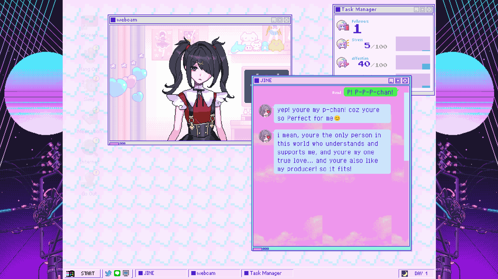

Needy Streamer Overload (NSO) is a visual novel and management simulation game developed by Japanese creator Xemono. It follows the daily life of Ame-chan, an aspiring internet streamer who aims to use the persona “OMGKawaiiAngel” to achieve one million followers in thirty days. The player takes on the role of P-chan, Ame-chan’s boyfriend and manager, controlling Ame-chan’s daily activities and streaming contents to affect her follower count, stress level, affection, and mental darkness. These statistics will determine the story’s progression and lead to one of 25 possible endings. NSO presents a unique visual and thematic aesthetic drawn from the yami-kawaii subculture, where the game contrasts the pastel colour palette and cute character design with narratives involving self-harm, mental illness, and cyberbullying. Originating in Harajuku, Tokyo, yami-kawaii—translating to “sick-cute”—is characterized by the mix of “traditional cute elements” with “dark and grotesque motifs” (Seko & Kikuchi, 2022, p.7). By integrating these visual and thematic elements, NSO provides players with an immersive experience that challenges conventional perceptions of cuteness, bringing menhera, female characters who exhibit obsessive love and self-injurious behaviours (Seko & Kikuchi, 2022), to a wider population.
NSO emphasizes Ame-chan’s vulnerabilities and captures the dark side of the Japanese Internet, where emotional exposure is both a commodity and a spectacle. Feminist critiques of popular media highlight how women’s emotional struggles are often commodified or portrayed as spectacles for consumption (Harvey, 2020). In this framework, self-harm tends to be framed as a “feminine phenomenon” (Jaworski, 2016, p.23) for the viewer’s or player’s engagement, reinforcing patriarchal assumptions that associates women’s vulnerability with passivity, irrationality, or attention-seeking (Jaworski, 2016). Self-harm is a key theme of analyzing the gendering of mental illness in Japanese media, where the action is mostly performed by adolescent girls to “cope with feelings of despair, loneliness, or emotional numbness” (Seko & Kikuchi, 2022, p.2). Building on Jaworski’s (2016) argument that self-harm has historically been framed through a gendered lens, this paper examines Needy Streamer Overload as a case study of how Japanese pop culture represents female self-harm using stylized, cutesy visuals and interactive gameplay to commodify and pathologize female self-harm. By analyzing the representation of female self-harm in NSO, the paper aims to answer the question of how the concept of self-harm and structured opposition of masculinity and femininity is interrelated to each other.
Self-harm is not a gender-neutral phenomenon but is deeply shaped by sociocultural constructions of masculinity and femininity. According to Jaworski (2016), suicidology was historically privileged as a masculine action. Mainstream suicidology often frames suicide as a “male phenomenon” (p. 15) which are culturally associated with masculine agency. On the other hand, self-harm—or “nonfatal ‘failures’” (p. 21)—are often defined as a demonstration of femininity. Passive methods such as overdoses or cutting are viewed as feminine, and are read as attention-seeking, manipulative, or pathological. Such interpretations reinforce gendered binaries: women’s self-harm becomes reduced to emotionality or irrationality, tied to assumptions about femininity and the body, whereas men’s acts are free from gendered analysis, automatically read as purposeful agency.
The visual approach of NSO exemplifies male gaze toward the character and the fetishism of self-harm. NSO adopts a nostalgic Windows 95 interface with desktop icons and retro chat windows, showing an early-internet aesthetic. Ame-chan, is presented to the player through a webcam on the desktop. The only way she could communicate with the player is through JINE, an online chat application in the game. This arrangement of the interface creates a unique and engaging gameplay experience that blurs the line between reality and virtuality but simultaneously sets up a sealed world for the player, satisfying their visual pleasure through the “voyeuristic pleasure of watching others while remaining unseen oneself” (Harvey, 2020, p. 68). Through these visuals, NSO subtly guides the player to objectify and fetishize Ame-chan and her self-injured body, offering a pleasure in consuming the wounded female body. The representation of self-harm becomes a form of entertainment for the player, reinforcing the negative stereotypes of the femininity of self-harm, ultimately reinforcing a culture of commodifying women’s suffering.

The main interface of Needy Streamer Overload
The visual design of the main protagonist embodies the yami-kawaii aesthetic, where the pastel colours of the streamer persona OMGkawaiiangel contrasts with the dark, melancholic character design of Ame-chan. Such visuals emphasize a proposition: “menhera is cute” (Seko & Kikuchi, 2022, p. 7). The juxtaposition of these contrasting elements serves to fetishize female self-harm, blurring the lines between female pain and aesthetic appeal. The portrayal of Ame-chan can be seen as a variation of the classic narrative trope of damsel in distress, where a “young, attractive, and helpless mistress” (Seko & Kikuchi, 2021, p. 364) is waiting to be rescued by a hero, and her self-harm implies “feminine dependence, …weakness, failure, foolishness… [and] helplessness” (Jaworski, 2016, p. 24). Self-harm is characterized as an “identity label” ( Seko & Kikuchi, 2021, p.364) of Ame-chan in the narrative of NSO, marking her as fragile, passive, and in constant need of rescue or intervention. In this context, the player gains pleasure from narcissism, where they put themselves into the place of P-chan-- the invisible, yet most powerful figure in the game—and position themselves as Ame-chan’s only rescuer. In NSO, self-harm is utilized as a bridge linking female suffering with weakness, dependence, and irrationality. This narrative mechanic represents self-harm as a tool for generating player interest rather than a serious mental health condition. Such gendered representation perpetuates the objectification of women in media.
The interactive gameplay structure and multi-ending motif are also central in understanding how the game portrays female self-harm. By adjusting the Ame-chan’s in-game statistics, players can unlock multiple endings, tying self-harming behaviors directly into the gameplay. Overdosing, for instance, is presented as an effective method for reducing Ame-chan’s stress while increasing her mental darkness. Moreover, repeated overdoses give access to special streaming content and unique endings, suggesting that self-harm is not just a narrative element but a strategic mechanism for unlocking new pathways. In the game, the process of self-harm is simplified into a simple click on a pop-up window, followed by a surreal animation sequence and Ame-chan’s hysterical expression. This game mechanism not only places the player in a manipulative position over Ame-chan, but also implicitly encourages the player to engage in harmful behaviours to explore all possible outcomes. NSO builds up a stage for Ame-chan where she is constantly under the player’s surveillance, objectifying Ame-chan to a spectacle, transforming her self-injury into a commodity that both fetishizes and exploits her pain for the player’s gratification. This portrayal of female self-harm “reflects and reproduces” the long-standing association of self-injury and acts of cutting with young women (Seko & Kikuchi, 2022, p. 2).


Needy Streamer Overload illustrates how Japanese pop culture utilizes stylized, yami-kawaii aesthetics and interactive gameplay to commodify and fetishize female self-harm. Throughout the game, Ame-chan’s struggles are both romanticized and manipulated to reinforce patriarchal assumptions that equate female vulnerability with passivity, irrationality, and the need for male intervention. By integrating self-harm into the game mechanism, NSO dilutes the seriousness of mental health issue to a mechanic for unlocking content, therefore offering a form of voyeuristic pleasure that overlooks the complexity of female self-harm. NSO's representation of female self-harm highlights the broader trend in Japanese media that commodifies female pain through cute aesthetics and ambiguous moral framing. This pattern also demonstrates how the representation of women in Japanese media is typically “narrow” and “sexualized” (Harvey, 2020, p. 61). This perpetuates stereotypes and reinforces societal norms that contribute to the pathologization of female self-harm and marginalization of women, reifying the structured femininity and masculinity, creating a social order that “normalizes violence and heterosexual desire for men and boys” (Harvey, 2020, p. 64).